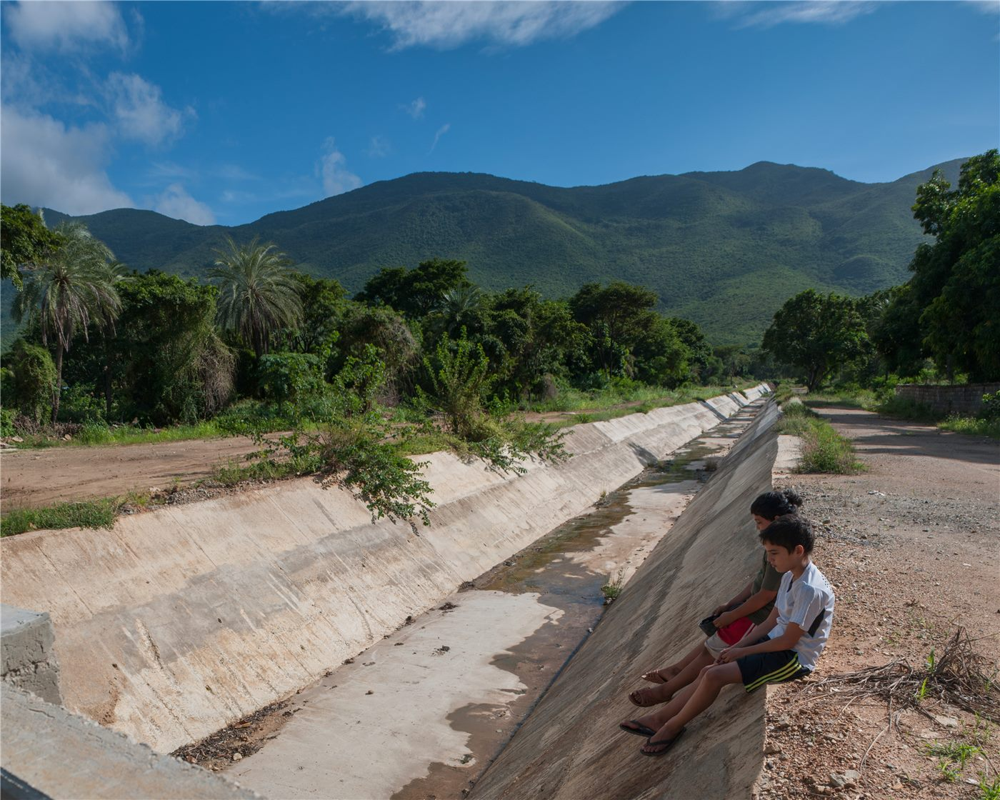
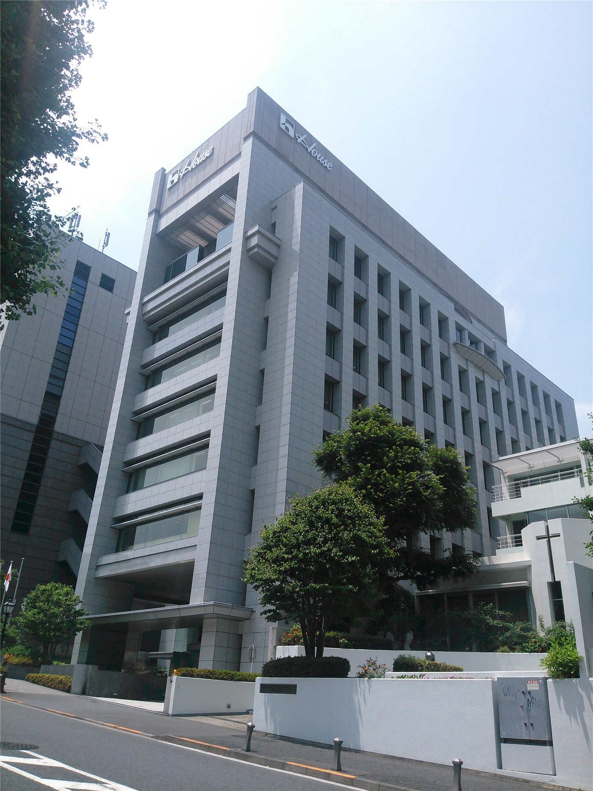
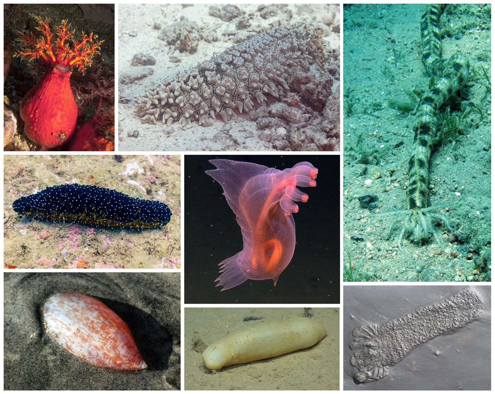

橋사회
사회인천 차이나타운 140년… 1만 명으로 줄어든 한국 화교, 그 깊은 뿌리
1884년 인천화상조계 이래 140년. 인구는 8만에서 1만으로 줄었지만, 역사·문화 자산과 관광 가치는 오히려 커지고 있다.
1884년 인천화상조계 이래 140년. 인구는 8만에서 1만으로 줄었지만, 역사·문화 자산과 관광 가치는 오히려 커지고 있다.

첨단 신도시와 근현대 개항장의 공존. 해외 매체도 주목.

이중 언어·문화 강점. 무역·통번역·교육으로.

한 고등학교에서 특정 집단을 비하하는 표현이 ‘구호’처럼 사용돼 논란이 일었다. 놀이의 외피를 쓴 혐오가 교실로 번지는 현실에 우려가 커지고 있다.

농업 지원금을 받아 바질을 재배하겠다던 시설이 실제로는 대마를 기른 ‘스마트팜’이었던 것으로 드러났다. 공적 지원의 사각지대가 도마에 올랐다.

특별한 ‘보양식’ 한 끼보다 소화가 쉬운 음식을 꾸준히 먹는 것이 노년 건강에 더 낫다는 조언이 나왔다. 핵심은 한 번의 특식이 아니라 일상의 영양 관리다.

만성 통증을 다스리는 데에는 무리한 동작보다 ‘자연스러운 움직임’에 집중하는 관절 운동이 도움이 된다는 조언이 나왔다. 통증을 피하면서 가동 범위를 회복하는 것이 핵심이다.

대만에서 경찰관들이 사기 조직에 수사 정보를 흘린 의혹으로 검찰 수사를 받고 있다. 일부는 구속, 일부는 보석으로 풀려났다.

여름방학을 맞아 대만 가오슝시가 심야 시간대 청소년 보호를 위한 집중 단속에 나섰다. 탈선 위험을 줄이고 안전을 지키려는 조치다.

야구 명문 배재고가 5·18 민주화운동 조롱 사건으로 중징계를 받았다. 7월 2일 열릴 예정이던 청룡기 2회전 경기도 몰수패로 처리됐다.

한국 20대의 자산 상위 20%와 하위 20% 간 격차가 34배까지 벌어진 것으로 나타났다. 부동산 등 실물자산 격차는 206배에 달했다.

중국 대륙이 남북으로 극단적인 날씨를 겪고 있다. 7월 1일 허베이성에 고온 오렌지 경보, 베이징에 고온 황색 경보가 발령된 반면, 남부에는 대범위 폭우가 쏟아졌다.

일본 경찰이 도쿄 가부키초에서 '전설의 스카우트'로 불리던 인물을 체포했다. 유흥업소 종사자 알선을 둘러싼 착취 구조에 수사의 칼이 겨눠졌다.

환율 급등과 증시 급락이 겹친 변동성 장세에서 시세조종성 테마주에 대한 경계령이 내려졌다. 주가조작 사건 수사와 맞물려 개인 투자자 보호가 화두로 떠올랐다.

길에서 스윙카를 타던 초등학생이 차량에 치여 치료를 받다 끝내 숨졌다. 경찰은 운전자의 혐의를 치상에서 치사로 전환했다.

대만 가오슝시가 폭우 뒤 병매개 모기가 급증하자 38개 구 전역에서 방역 총동원령을 내렸다. 뎅기열 등 모기 매개 감염병 차단이 목표다.

기름값이 떨어지는데도 밥상 물가는 들썩이고 있다고 경향신문이 전했다. 특히 파 가격이 37% 급등해 서민 장바구니 부담이 커졌다.

집회에서 ‘스타벅스 구호’ 논란에 휘말렸던 배재고 학생 2명에 대해 학교가 징계 절차에 착수, 생활교육위원회에 회부했다고 경향신문이 전했다.

순직한 대만 공군 조종사 궈쥔난(過俊男)의 아내가 “내 남편은 슈퍼히어로였다”며 “그리움이 이렇게 깊을 수 있는지 몰랐다”고 애도했다고 聯合報가 전했다.

청각장애인들의 명의를 빌려 장애인 특별공급 아파트 30여 채를 불법 분양받은 일당이 경찰에 붙잡혔다. 강남 초고가 단지까지 포함된 조직적 범행으로, 브로커 등 40명이 검거됐다.

전국 신생아 중환자실(NICU)이 전공의 공백으로 붕괴 직전이라며 대한신생아학회가 대통령에게 긴급 호소문을 냈다. 미숙아 치료의 최전선이 인력난에 흔들리고 있다.

한밤중 ‘도로에 사람이 쓰러져 있다’는 신고를 받고 출동한 경찰 순찰차가 정작 쓰러져 있던 시민을 밟고 지나가 숨지게 하는 사고가 발생했다. 경찰은 진상 조사에 착수했다.

직장 내 괴롭힘인 ‘태움’ 피해를 호소해 온 20대 간호사가 숨져 경찰이 유족을 상대로 첫 조사에 나섰다. 의료 현장의 괴롭힘 문화가 다시 도마에 올랐다.

흉기를 챙겨 미용실에 난입해 손님과 종업원에게 휘두른 80대 남성에 대해 경찰이 구속영장을 신청했다. 일상 공간에서 벌어진 흉기 난동에 시민 불안이 커지고 있다.

대만 최대 규모로 꼽히는 암표상 ‘창니(強妮)’가 새벽 압수수색 끝에 검거됐다가 50만 대만달러에 보석으로 풀려났다. 주요 콘서트 티켓을 조직적으로 쓸어 담아 웃돈을 붙여 되판 혐의다.

직장 내 괴롭힘을 호소하다 숨진 여성 소방관 사건과 관련해, 고인을 비하하는 온라인 댓글이 잇따라 경찰이 수사에 나섰다고 경향신문이 보도했다. 2차 가해 논란이 커지고 있다.

서울 배재고에서 불거진 학생 징계 논란이 정치권 공방과 법적 다툼으로 번지고 있다고 경향신문이 보도했다. 전문가들은 공방보다 혐오 행위 재발 방지 대책에 초점을 맞춰야 한다고 지적한다.

부산에서 5·18 민주화운동 관련 허위사실을 오픈채팅방에 퍼뜨린 20대가 검찰에 송치됐다고 경향신문이 보도했다. 그는 “호기심에 글을 복사해 붙였다”고 진술한 것으로 전해졌다.

여름 휴가철을 맞은 강릉 해변에서 상어 출몰 신고가 접수돼 긴급 재난문자가 발송됐다고 경향신문이 전했다.

서울 강남구 논현동의 한 도로에서 새벽 시간 도로에 누워 있던 40대 남성이 택시에 치여 숨졌다고 경향신문이 전했다.

교제폭력으로 접근금지 명령을 받은 50대 남성이 한 달 만에 옛 연인의 퇴근길을 기다렸다가 60대 여성을 살해하는 사건이 발생했다고 조선일보와 경향신문이 5일 보도했다.

광주의 한 고등학교에 폭발물을 설치했다는 협박이 접수돼 경찰이 수사에 착수했다고 조선일보와 경향신문이 5일 보도했다. 경찰청은 “명백한 범죄로 엄정 대응하겠다”고 밝혔다.

월 5만 원 안팎의 공공수영장 강습권을 잡으려는 ‘수켓팅(수영+티케팅)’ 경쟁이 치열해 새벽 4시 오픈런까지 벌어지고 있다고 조선일보가 5일 보도했다.

전남광주통합시에서 올해 첫 중증열성혈소판감소증후군(SFTS) 환자가 발생했다고 경향신문이 5일 보도했다. 보건당국은 야외활동 시 진드기 물림 주의를 당부했다.

석탄산업 구조조정으로 폐광이 이어진 강원 태백시가 전국 인구감소율 1위라는 성적표를 받아들었다. 대체 산업 없이 폐광만 진행됐다는 주민들의 성토가 이어진다.

전 연인의 사생활 사진을 유포하고 협박한 혐의를 받는 경기 고양시의회 의원이 검찰에 송치됐다.

알츠하이머병이 뇌의 인슐린 저항성과 깊이 얽혀 있다는 연구가 쌓이면서 '제3형 당뇨병'이라는 별칭이 굳어지고 있다. 혈당 관리가 치매 예방의 열쇠일 수 있다는 의미다.

‘여고생 살해’ 사건 피의자 장윤기의 범행 증거 인멸 의혹과 관련해, 경찰이 당시 광주 지역 수사팀장을 긴급체포했다. 수사기관 내부 인사가 증거 인멸에 연루됐다는 의혹이라 파장이 크다.

대만의 한 모텔에서 남성이 숨진 여자친구의 시신을 얼음으로 보존한 채 지낸 사건이 드러났다. 여성은 약물 과다 복용으로 숨진 것으로 추정되며, 남성은 사인을 몰랐다고 주장하고 있다.

고교야구 경기에서 상대 학교를 조롱하는 응원이 논란이 된 배재고-광주일고전과 관련해, 논란을 빚은 측이 상대 학교를 찾아 사과하는 방안이 추진되는 것으로 전해졌다.

강태풍 바비가 북상하면서 금요일 밤부터 대만 일부 지역이 폭풍권에 들 전망이다. 1997년 태풍 위니와 유사한 경로라는 분석 속에, 장화현은 방수 차단판 3천 장을 무료 대여하는 등 방재 준비가 본격화됐다.

경북 김천 북동쪽에서 규모 2.1의 지진이 발생했다. 피해는 보고되지 않았지만, 기상청은 여진 가능성 등 안전에 유의해 달라고 당부했다.

대만 샤오류추 해역에서 낚싯줄에 온몸이 감겨 죽어가던 바다거북이 다이빙 강사에게 다가와 구조되는 장면이 포착됐다. 보기 드문 영상이 공개되며 해양 쓰레기 문제가 다시 조명받고 있다.

물건도 결제 손님도 사라진 텅 빈 매장에 남은 직원들이 생계를 걱정하고 있다고 경향신문이 전했다. 투기자본의 무책임한 경영과 온라인 전환 실패가 겹치며 30년 역사의 대형마트가 몰락 위기에 몰렸다는 진단이다.

국립산림과학원이 유기농업자재를 활용한 야외 실증 실험에서 ‘러브버그’(붉은등우단털파리)에 대한 뛰어난 살충·방제 효과를 확인했다고 7일 밝혔다.

노벨문학상 수상 작가 한강이 사내이사로 참여해 온 서울의 독립서점 ‘책방오늘’이 건물 전체가 팔리면서 7일 문을 닫는다.

전북도가 전국 최대 규모인 180홀 파크골프장 조성을 추진한다고 경향신문이 전했다. 고령층 인기 스포츠 수요를 겨냥했지만 재정 부담과 하천 환경 훼손 논란이 함께 불거졌다.

8일 아침 출근 시간대 서울 지하철 1호선 일부 구간이 갑작스러운 정전으로 멈춰 서면서 출근길 대란이 벌어졌다. 역마다 승객이 쏟아져 나와 승강장과 대합실이 가득 찼다.

장맛비가 거세지자 경기도가 올여름 처음으로 재난안전대책본부 비상 1단계를 가동했다. 행정안전부도 호우에 대비해 7개 시도에 상황관리관을 파견하며 대응 수위를 높였다.

인천공항이 자리한 영종도의 해안을 한 바퀴 도는 54㎞ 순환도로가 오는 13일 완전히 이어진다. 마지막 미개통 구간이 연결되면서 영종 주민과 공항 이용객의 이동이 한층 수월해진다.

전통시장을 돌아다니는 쥐와 바퀴벌레를 인공지능(AI)으로 잡는 실험이 서울에서 시작된다. 동대문구가 'AI 스마트 통합 해충관리' 사업을 추진한다.

'5·18 비하 구호' 논란으로 6개월 출전정지 징계를 받은 배재고 야구부가 재심을 청구했다. 그러나 심의가 열리기까지 최소 2개월이 걸려, 사실상 시즌 복귀가 불투명하다.

허위정보 대응을 내건 정보통신망법 개정을 두고 논쟁이 커지고 있다. 미국 국무부가 '표현의 자유 훼손을 심각하게 우려한다'는 입장을 밝힌 사실이 알려지면서, 법안의 위헌성·모호성 논란이 한층 가열됐다.

무더위 속 한국의 여름 보양식 문화가 '탕(湯)' 전성시대를 맞았다. 예약이 힘들다는 고급 곰탕 '방치탕'부터 조선시대 '새벽배송' 해장국이던 효종갱까지, 더위를 탕으로 이기는 전통이 재조명되고 있다.

인천에 거주하는 60세 이상 외국인도 대상포진 예방접종을 무료로 받을 수 있다는 안내가 화교 사회에 퍼지고 있다. 인천화교협회가 공고를 통해 회원들에게 접종을 권하고 나섰다.

9일부터 10일까지 수도권을 중심으로 50~100mm, 많은 곳은 150mm 이상의 비가 예보됐다. 기상 당국은 강한 비 이후에도 높은 습도 속 무더위가 이어질 것으로 내다봤다.

교사 부족에 시달리는 대만이 고등학교 단계에 도입한 과학기술 분야 교사 지원 제도를 중학교(國中)까지 확대하는 방안을 추진한다.

대만 가오슝시가 대형 오토바이(重機)의 자동차 주차칸 이용을 제한하자 라이더들이 강하게 반발하고 있다.

한국의 외국인 유학생이 10만 명을 넘어 역대 최대를 기록했다. 한류와 취업 연계 전형 확대가 맞물린 결과로, 중화권 유학생이 큰 축을 이룬다. 유학생 확대는 지방대학과 지역 경제의 활로로도 주목받는다.

인공지능 확산이 고용에 미치는 충격을 실시간으로 추적하는 모니터링 체계가 가동된다. 그러나 일자리를 잃는 노동자를 받쳐 줄 소득 안전망은 여전히 과제로 남아 있다.

회사 여자화장실 세면대 아래에 초소형 카메라를 설치해 여성 동료 5명을 촬영한 남성에게 대만 법원이 징역 1년 2월을 선고했다. 직장 내 불법 촬영 범죄에 실형이 내려졌다.

심장마비는 곧 죽음이라는 통념과 달리, 상당수 환자에게는 구할 수 있는 '골든타임'이 존재한다는 임상 경험이 소개됐다. 심폐소생술과 자동심장충격기(AED)가 그 시간을 여는 열쇠다.

돌문어 금어기가 해제된 첫날, 경남 사천 삼천포 일대에 전국의 낚시꾼이 몰려 문전성시를 이뤘다. '삼천포로 빠지다'라는 관용구가 이날만큼은 최고의 찬사가 됐다.

아이돌 그룹 멤버의 '무섭노' 발언을 둘러싼 논란에 거제시장이 직접 입장문을 냈다. “일상적으로 쓰는 방언”이라며 정치적 해석을 경계한 것으로, 온라인 커뮤니티발 논쟁이 지역 정체성 문제로 번진 모양새다.

서울 도심 서소문로의 차량 통제가 12일 해제된다. 서울시는 8월부터 서소문고가 신설 공사에 착수해 2029년 3월 개통을 목표로 한다고 밝혔다.

여름 동해안이 미식가들을 부른다. 경주 감포시장을 거쳐 포항 죽도시장으로 이어지는 '먹거리 순례' 코스가 주말 나들이객 사이에서 입소문을 타고 있다.

게임에 빠져 생후 7개월 된 아들을 방치해 영양실조로 숨지게 한 혐의(아동학대살해)로 20대 부부가 구속됐다고 경향신문이 보도했다. 반복되는 영유아 방치 사망에 사회 안전망 점검을 요구하는 목소리가 커지고 있다.

경찰이 방송인 박나래 씨의 전 매니저 갑질 의혹에 대해 7개월간의 수사 끝에 혐의가 인정된다고 판단하고 사건을 검찰에 송치했다고 경향신문이 보도했다.

낮에는 바다에서 일하고 노점을 꾸리며 밤에 공부하는 생활을 10년간 이어 온 1976년생 대만 수험생이 지방특고(地方特考) 금방(수석급 합격)에 이름을 올렸다고 聯合報가 전했다. 그는 ‘두 가지 마음가짐’으로 인생을 뒤집었다고 말했다.

전국이 한낮 최고 40도에 이르는 극한 폭염에 갇혔다. 밤에도 기온이 떨어지지 않는 열대야가 이어져 온열질환과 전력 수급에 비상이 걸렸다.

세종포천고속도로의 한 터널에서 차량 5대가 잇따라 추돌해 1명이 심정지 상태로 병원에 옮겨졌다. 휴가철 통행량 증가 속 터널 안전운전에 경고등이 켜졌다.

폭염 속 식중독 위험이 커지는 계절, 남은 음식의 보관 기한이 애매할 때 참고할 ‘4·4 법칙’이 소개됐다. 상온 4시간, 냉장 4일을 넘긴 음식은 과감히 버리라는 것이 핵심이다.

태풍 바비의 간접 영향권에 든 제주에 초속 20m의 강풍이 몰아치며 항공기 81편이 결항하고 2편이 회항했다. 여객선도 무더기 통제돼 주말 여행객들의 발이 묶였다.

경기도 내 교량·공사현장 등 재난취약시설의 절반 이상이 안전 점검에서 미흡 판정을 받았다. 폭염·태풍 등 재해가 겹치는 여름철, 시설 안전관리에 경고등이 켜졌다.

강원 속초시가 오는 20일부터 시민 1인당 20만 원의 민생회복지원금 신청을 받는다. 고물가에 지친 지역 민생에 숨통을 틔우겠다는 취지다. 관내 거주 외국인 주민의 포함 여부는 공고문 확인이 필요하다.

전국 대부분 지역에 폭염특보가 내려진 가운데 온열질환자가 하루 사이 5배로 급증했다. 비닐하우스에서 일하던 80대가 숨지는 등 고령 농업인 피해가 잇따르고 있다.

기업회생 절차를 밟고 있는 홈플러스가 점포에서 대규모 재고 할인에 나서자 고객 발길이 몰렸다. '반값 세일'의 북적임 뒤로, 대형마트 산업의 구조조정 그늘이 겹쳐 보인다.

광주 여고생 살해 사건의 피의자 장윤기가 범행 2개월 만에 '강간 목적 살인' 혐의를 인정했다고 조선일보와 경향신문이 보도했다.

인사 비위 혐의로 수사를 받아온 김하수 전 경북 청도군수가 숨진 채 발견됐다. 경찰은 '범죄 혐의점은 없다'고 밝혔다.

해군이 주말 동해 경비임무 중 실종된 병사 1명의 시신을 수습했다. 시신은 남북 해상경계에 가까운 해역에서 발견됐다.

난민 신청자들이 건강보험 가입이 어려워 의료비 사각지대에 놓여 있다는 지적에, 법무부가 '지원 대상을 확대할 예정'이라고 밝혔다고 경향신문이 단독 보도했다. 국내 체류 외국인 전반의 의료 접근성 문제와 맞닿아 있다.

인공지능(AI) 기능이 든 스마트 안경을 쓰고 시험을 치르던 40대가 감독관의 눈썰미에 적발돼 검찰에서 약식기소됐다. ‘웨어러블 AI’ 시대의 신종 부정행위에 경종을 울린 사례다.

정부가 스토킹·교제폭력 대책을 새로 내놨지만, 피해자 보호의 성패를 가르는 ‘현장 집행력 강화’ 방안은 이번에도 담기지 않았다는 지적이 나온다.

경기 성남 정자역 인근에서 50대 여성이 몰던 벤츠 승용차가 인도로 돌진해 30대 보행자가 숨졌다. 경찰이 급발진 주장 여부 등 사고 경위를 조사하고 있다.

낮 최고기온이 37도까지 오르는 폭염과 밤사이 시간당 50mm의 폭우가 한꺼번에 닥친다. 폭염과 호우 특보가 같은 날 공존하는 ‘이중 기상’에 방재 당국이 비상에 걸렸다.

한국의 공항버스 안에서 승객이 쓰러지자 함께 타고 있던 중국인 관광객들이 힘을 모아 응급 구조에 나선 사연이 전해졌다. 당사자들은 중국 매체에 당시 상황을 직접 증언했다.

RNA 연구의 세계적 권위자 김빛내리 서울대 교수가 아시아 최초로 나카소네상을 받았다. 노벨상 수상자를 다수 배출한 상이어서 ‘한국인 첫 과학 노벨상’ 기대가 다시 커지고 있다.

이웃 구한 주민·밤샘 자원봉사… 재해 속 공동체의 힘

여름 해외여행 성수기 겹쳐… 임신부 등 위험군 각별 주의

유튜버가 사비 3000만 원을 들인 임상시험 결과를 공개하며 다이소 선크림의 자외선차단지수 미달을 주장했다. 다이소는 식약처 기준 준수를 강조하며 공인기관 재검증을 예고했다.

현직 시의원이 중학생을 상대로 성매매를 하고 성착취물을 만든 혐의로 수사선상에 올랐다. 경찰은 의원실과 자택 등을 압수수색하며 강제수사에 착수했다.

충남 서산의 영화관에서 40대 남성이 친구가 휘두른 흉기에 가슴을 찔렸다. 피의자는 도주 3시간 만에 붙잡혔고, 경찰이 범행 동기를 조사하고 있다.

2008년 원촨 대지진에서 구조됐던 소년이 훗날 군에 입대해 재난 현장에서 사람을 구하는 전사가 됐다. 인민망이 전한 사연에 ‘은혜의 릴레이’라는 반응이 이어진다.

정부 총력전 이후 첫 반기 통계… 건설·제조 현장 감독 강화, 하청 구조 개선은 여전한 숙제

체내 은닉 밀수 시도, 검사 과정서 덜미… ‘보디패커’의 치명적 위험

법 시행 7년이 지났지만 어떤 일터에서는 갑질이 여전히 처벌받지 않는다. 5인 미만 사업장이라는 이유로 직장내괴롭힘금지법의 보호 밖에 놓인 노동자들의 이야기다.

스펙을 사려다 덫에 걸린다. 중국에서 취업준비생을 겨냥한 ‘유료 원격 인턴십’ 상품이 번지자 관영 매체가 주의보를 울렸다.

출국장의 작은 친절이 공항의 이름으로 보상받았다. 인천공항 편의점 직원이 승객의 무선 이어폰을 찾아 주려 바닥에 엎드린 사연이 알려지자 공항공사가 포상에 나섰다.

중국의 여름 하늘에 경보 세 개가 나란히 걸렸다. 폭우·태풍·고온 경보가 겹치자 정부 부처들이 수해 방지 물자를 긴급 조달하며 대응에 나섰다.

여름 방학을 앞둔 등하굣길에 아찔한 순간이 있었다. 초등학생들을 유인하려던 50대가 경찰에 붙잡혔다.

교단의 관리자가 과로로 쓰러지고 있다. 대만에서 최근 5년간 15명의 교장이 재임 중 세상을 떠났고, 조사 결과 교장들은 하루 평균 12시간 넘게 일하는 것으로 나타났다.

아이를 맡긴 첫날, 아이가 돌아오지 못했다. 타이난에서 1세 남아가 위탁 중 사망했고, 무자격 보모의 신상이 인터넷에 퍼지며 그의 집에 계란과 지전이 뿌려졌다.

새벽의 사당 앞이 폭력의 무대가 됐다. 칼에 베인 것에 앙심을 품은 남성이 총을 쏜 뒤 스스로 경찰에 출두했다.

가족의 이름이 서류에 올랐고, 돈은 다른 곳으로 갔다. 보좌진 인건비 977만 대만달러를 부정 수령한 혐의로 타이베이 시의원 등 7명이 기소됐다.

발전소 배수구가 바다거북의 놀이터가 됐다. 컨딩 제3원전 출수구에 바다거북이 무리 지어 파도를 타는 모습이 포착됐다.

경기 군포의 어린이공원 물놀이장에서 에어바운스 기구가 뒤집혀 어린이 5명이 다쳤다. 아이들은 병원으로 옮겨졌고, 당국은 사고 경위를 조사하고 있다.

대만에서 시판 중인 영유아용 이유식 제품 대다수에서 미세플라스틱이 검출됐다는 조사 결과가 나왔다. 포장과 제조 공정 전반에 대한 점검 필요성이 제기된다.

대만 타이중의 공유자전거 유바이크(YouBike) 스테이션이 목표보다 일찍 1,800개소를 넘어섰다. 하루 이용 횟수는 8만4천 회를 돌파해 역대 최고를 기록했다.

차 석 대가 얽힌 사고에서 승용차가 뒤집혔다. 두 사람이 차 안에 갇혔고, 오토바이 운전자는 심정지 상태로 병원에 실려 갔다.

불은 아래층에서 시작됐고, 위층에 있던 18세 여성은 창문으로 나갔다. 배터리 하나에서 시작된 불이 한 사람의 삶을 위태롭게 했다.

여름 식중독의 원인이 늘 상한 음식은 아니다. 멀쩡한 재료를 쓰고도 도마 하나 때문에 온 가족이 앓는 일이 벌어진다.

제주 걷기길 ‘올레’를 만든 고(故) 서명숙 이사장에게 정부가 국민훈장 모란장을 추서했다. 언론인 출신으로 고향의 길을 열어 전국적 걷기 문화를 일군 공로가 인정됐다.

대만 台中(타이중) 지방법원의 법경(法警)이 비 오는 날 나무를 정리하던 중 사다리에서 떨어져 숨졌다. 법원은 “매우 안타깝고 유감”이라며 애도를 표했다. 우천 시 고소 작업의 위험이 다시 확인됐다.

코를 골며 자다 숨이 멎는 수면무호흡증. 흔히 쓰는 양압기(CPAP)를 대신할 새로운 치료법이 주목받고 있다. ‘잠든 혀의 근육을 깨우는’ 방식이 얼마나 대안이 될 수 있을지 관심이 모인다.

무더위 속 물놀이 사고가 잇따르고 있다. 수원의 하천에서 물놀이하던 10대가 숨졌고, 보성의 양식장에서는 8세 아이가 물에 빠져 의식불명 상태에 놓였다.
여름휴가를 떠나는 1인 가구가 가장 걱정하는 것은 ‘택배 도난’인 것으로 나타났다. 집을 비우는 동안 문 앞에 쌓이는 택배가 불안 요소로 꼽혔다.
교도소에 수감된 이들의 영치금까지 채권 추심의 대상이 되면서, “소시지 하나 사 먹을 돈도 묶인다”는 사연이 전해졌다. 수감자 처우와 추심의 경계를 둘러싼 논의가 제기된다.

대만 이란과 타이중 등지에서 심야 화재가 잇따라 발생해 다수가 건물에 갇혔다가 구조됐다고 자유시보·연합보가 전했다. 다행히 대형 인명 피해는 없었으나, 노후 건물의 화재 안전이 다시 도마에 올랐다.

육아휴직을 ‘자유롭게 쓸 수 있다’고 답한 비율이 비정규직과 5인 미만 사업장에서는 여전히 30%대에 머문다고 경향신문이 전했다. 제도는 있어도 현장의 문턱은 높다는 현실이다.

유연근무와 재택근무를 도입하고도 성과를 내는 조직에는 공통점이 있다고 조선일보가 전했다. 근무 장소가 아니라 신뢰와 소통, 명확한 목표가 성패를 가른다는 것이다.

한 달 사이 양식장에서 해삼 1t 이상을 훔친 조직범죄 일당이 검찰에 넘겨졌다. 수산물 절도가 조직적으로 이뤄진 정황이 드러났다.
한국에서 도박 관련 신고·상담이 한 달 사이 74% 늘었다. 성인의 빚투와 청소년 도박이 함께 늘며 사회적 경각심이 커지고 있다.
제주에서 주말 물놀이 도중 1명이 숨지고, 해파리에 쏘인 피해도 잇따랐다. 본격 피서철을 앞두고 수상 안전에 주의가 요구된다.

5·18 민주화운동을 조롱했다는 논란에 휩싸인 배재고 야구부의 출전 정지 징계가 6개월에서 1개월로 감경돼 전국 대회에 출전하게 됐다. 華橋時報는 논란 사안을 사실 중심으로 전한다.

감사원이 서울시교육청의 학생부(생기부) 관리 부실을 적발했다. 기록이 그대로 복사되거나 학교폭력 기록이 무단 삭제된 사례가 확인됐다. 華橋時報는 교육 사안을 제도 개선의 관점에서 전한다.

폭염 속에서 혈압이 갑자기 오르거나 어지럼을 느끼는 사례가 늘고 있다. 의료계는 더위와 탈수, 감정 기복이 모두 유발 요인이 될 수 있다고 조언한다. 華橋時報는 건강 정보를 언어 장벽 없이 전한다.